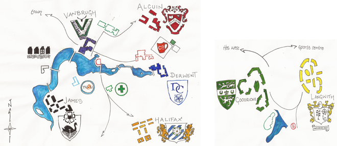
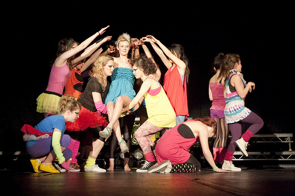
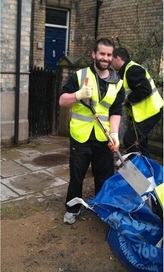
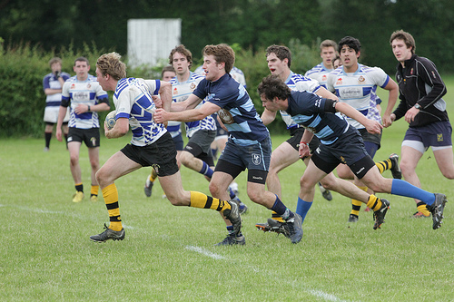
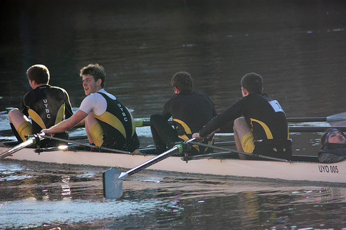
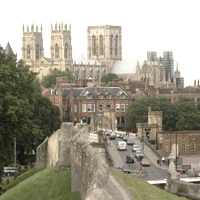
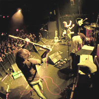

Freshers’ Guide 2012
From facebook groups to YUSU leaflets, there will be a load of information heading your way before term starts. But here is our take on life in the duck-filled university to prepare you for a great three to five years here – or even more. We hope you enjoy it.
|
WELCOME TO THE NOUSE 2012 FRESHERS' MINI-SITE! For those of you who are just joining us, you have some great years ahead of you. York is a great city as well as a great university. Whether you are a frisbee fanatic, enjoy re-enacting medieval battles or simply enjoy knitting, you will find your place amongst people from all walks of life here. To help you on your way, we have put together as many articles, recommendations and lists as we could to help you get to know the university and the city, and to demonstrate there is more to York than tea and vikings. In our college section you can read the student side of York’s colleges so you know where to go if you are a sport extremist, party animal, or just looking for a sociable atmosphere. The collegiate system is a great part of York and one that has a big impact on your first year. But as well as colleges, there are hundreds of societies, sports clubs, volunteering projects, and RAG events to get involved with, so don't miss Freshers’ Fair on the Saturday of week one. |
| Leaving for University is hard enough without having to worry about all the practicalities. Don't worry, we've got it covered | A fun bunch of 'top five' lists, from freshers' week fashion and icebreakers to tips on how to survive your first night out | Contributing to Nouse - York's oldest student-run newspaper starts here, with a quick guide on who to get in touch with this academic year |
|  |
Alcuin
Alcuin College, tucked away in a quiet corner of campus, is one of the oldest and largest colleges at York, yet has some of the newest accommodation. Fondly known as the ‘ensuite elite’, each room has its own bathroom, a serious luxury and one that ensures you can avoid awkward corridor encounters with flatmates whilst dashing half-naked from a shared shower. Some of you may even be blessed with a lift in your block, allowing you to avoid the oh so challenging task of clambering up three flights of stairs. Whilst particularly good, location wise, for students studying medicine and chemistry, the college is so big you are guaranteed a huge mix of students in your halls, and you will soon find that the popular myth of Alcuin as the gap year haven of York is just that, a myth.
The Alcuin bar ‘B Henrys’, whilst in no way the social epicentre of campus, holds popular quiz nights, and the occasional showcase of University musical talent. The JCR is always open for an impromptu movie night with your flatmates or an exuberant game of musical chairs. However, the main selling point for Alcuin is all the outdoor grassy space, and in the summer it really comes into its own. Out come the paddling pools and barbecues are set up where everyone from the surrounding blocks comes and joins in. The college even holds a summer fete, complete with food, bouncy castle and plenty of Pimms.
As one of the biggest colleges it’s great as you get to meet such a variety of people. Whilst the college events are often not the most popular, this is due more to limited space, and Alcuin holds a reputation as one of the most social colleges.
Facilities:
33 and 39 week lets
All self-catered
Between 5 and 16 people per kitchen depending on your house/flat
There are houses that have the kitchen on the ground floor, as well as the traditional flats/floors in a corridor layout
Many kitchens were refurbished in 2011
All rooms have ensuite bathrooms
Launderettes
All kitchens are equally stocked
Rent: between £117 - £123 per week for self-catered accommodation
Pros
• Ensuite bathrooms
• Right next to the library- easy to sprint there for a some emergency seminar reading
• Instead of ducks, Alcuin has a contingent of rabbits who inhabit the lawns- much friendlier and quieter residents
• Annual Christmas and Summer Balls are a great celebration of the community spirit of the college
Cons
• B-Henry’s, the college Bar, is one of the quietest on campus, and is only open a few days a week
• A little further away from the centre of campus than some of the other colleges- might have to set you alarm back a precious 5 minutes
• At 600 students it can feel a little daunting to begin with
• Across campus from the gym and sports fields. However, the jog over there makes for excellent exercise
Pascal Dubois, Alcuin JCRC Chair
“Alcuin is a well established college on the mountainous side of campus. From our lofty rookery we ardently defend our territory be this in academia or social involvement. The college has a growing reputation for rocking house parties and put up a good fight in their sporting activities. If you are studious and up for a laugh, environmentally and ethically aware, or keen on comradeship in your sports teams join us and together we can augment on this year’s successes by boosting our 21st century profile.”
--------------------------------------------------------
Derwent
Derwent College has a well-deserved reputation for being the most social college on campus. The long corridors and large blocks mean you’ll be living and interacting with lots of different people, rather than just the six you might get to a flat in other colleges.
The social atmosphere is best felt at the college’s famous Club D events, taking place regularly throughout the year, on the build up to a grand finale end-of-year event, Big D.
The Derwent JCR and extensive college sports teams make sure that you won’t be short of things to get involved. Plus, it’s some of the cheapest accommodation on campus, and offers some value catering deals, well worth considering if you don’t fancy cooking seven days a week.
Facilities:
39 week lets (51 week lets for postgraduates)
Blocks A, B, M, and P are catered (in the original Derwent accommodation area)
There are houses that have the kitchen on the ground floor, as well as the traditional flats/floors in a corridor layout
Ensuite and Standard bathrooms
Launderettes
New accommodation in the old Langwith College on Heslington West
All kitchens are equally stocked
Rent: between £90 - £117 per week for self-catered and £115 - £122 for standard catered accommodation
The prospectus missed out: It can get cold in winter, and the walls are pretty thin. When you’ve got freshers’ flu (inevitable) and you’re lying awake listening to the coughing at night, you might not find it so great. Communal showers and toilets can get clogged up with unspeakable things.
Favourite college hangouts: D-bar, for cheap drinks, events, pool tables, comfy sofas and wide-screen TVs. It’s basically your lounge. The JCRC is also a good place to organise film nights.
Mythbuster: “The older buildings are made entirely of asbestos”. They aren’t and the college has spent a large amount over the last year on renovating areas of concern.
Stereotypical student: The party animal
---------------------------------------------------------------------------------
Goodricke
Goodricke is still only a few years old and has neither the party-going attitude of Derwent, nor the quiet and reclusive feel of Alcuin. In fact, it falls both inside and outside of those extreme parameters. What you can guarantee is that you will meet a diverse range of people at Goodricke, some of whom will become friends for life.
One aspect of the college that people are very sceptical about is the fact that it resides on a separate campus, Heslington East. However, this is usually the attitude of ‘outsiders’ and Goodrickers generally take pride in and full advantage of the shiny, new facilities on Heslington East that few other students even know about. This year Langwith College will also be on Heslington East meaning there will be over 1000 students on this campus. Overall, toastie nights and film nights in the JCR, as well as frequent college events make Goodricke a fun and friendly college.
Facilities:
39, 41 and 51 week lets
All self-catered
There are houses that have the kitchen on the ground floor, as well as the traditional flats/floors in a corridor layout
Ensuite and Standard bathrooms
Launderettes
Good mix of undergraduates and postgraduates
All kitchens are equally stocked
Rent: between £117 - £123 per week for self-catered and £149 for studio flat accommodation
The prospectus missed out: There aren’t many downsides to living in Goodricke, but there are a few nevertheless. The main issue is socialising. Flats are obviously breeding grounds for meeting new people, what with all the walking up and down stairs involved, but if you’re in a house then you miss out on that side of things. The second issue is security which, though great for protecting our belongings, means that we can’t roam freely about our college, use our balconies, or open our ground-floor windows wider than two inches.
Favourite college hangouts: When those kitchen chairs become too hard to bear, the JCR and GCR are there offering comfort and entertainment in the form of sofas, board games, wide-screen TVs, video games, films, a piano, and toasties (only on a Wednesday between 10:30pm and 3am). In the summer the quads fill with people chatting, sunbathing, having BBQs, even playing ping-pong or cooling off in paddling pools.
Mythbuster: “It takes ages to get to main campus”. It’s actually two minutes by bus, four minutes by bike, and fifteen by foot.
Stereotypical student: Isolated rahs but now with new Langwith companions, alongside Alcuin known as the ‘Ensuite Elite’
Emily Niamh Miller, Goodricke JCRC Chair
“Goodricke stands apart from other colleges because of its pioneering spirit – being the first college to move over to the new Heslington East campus was no easy feat, but being brave enough to do so means that we now have some of the shiniest (and most futuristic looking) accommodation on campus – every day here really does look like something out of a university prospectus!
“Our incoming freshers will be joining a genuinely friendly college which has an immense Freshers’ Week lined up for everyone wise enough to choose Goodricke. There are, of course, too many events to do justice to in this small space - but our official timetable is on the way and includes an eclectic mix of cocktails, graffiti, gorillas and (of course) the colour green. All will make sense in due course. Until then, freshers simply need to learn one simple chant... I’M GOODRICKE ‘TIL I DIE!”
Halifax
Big, bright and bold, despite not being in the middle of campus, Halifax college certainly doesn’t go unnoticed. As you may have seen on the campus map, Halifax is just south of campus, a fairly easy 5 to 10 minute walk past the sports pitches (or through scenic woods, not to be attempted after dark!) It’s a bit different to the other colleges, as students live in courts that are made up of houses rather than flats, which share kitchen and bathroom facilities if you’re not en-suite. This is one of the best things about Halifax, as by living in a house you’ll get to know all your housemates fairly quickly and build a real sense of community. The houses surround a courtyard with grass and benches, great for impromptu Frisbee matches or just sitting around chatting. Halifax has an easy-going, friendly vibe to it and as you leave campus after lectures, you’ll feel like you’re coming home. The village of Heslington is two minutes’ walk away, which has 2 excellent pubs that are similar in prices to college bars and have a great student atmosphere.
You’ll find that you’ll spend a lot of time hanging about in the kitchen areas or the courtyards, but if you miss sitting on sofas then the common room, JJ’s, is open 24 hours. The pubs in Heslington, Charles VII and The Deramore, while not technically part of the college, are the local for many students from Halifax and other colleges alike.
Facilities:
39 and 51 week lets
All self-catered
Between 4 and 12 people per standard kitchen
Many rooms were refurbished in 2011
Ensuite and Standard bathrooms
Launderettes
Social spaces
Branch of Costcutter
All kitchens are equally stocked
Rent: between £117 - £123 per week for self-catered
What the prospectus didn’t tell you: That there are two different sides to the college. One is a chilled, friendly feel by day, surrounded by beautiful countryside. The other is a livelier and a vibrant vibe by night.
Stereotypical student: Halifax has a reputation for being good at sport, so some people assume that the college is filled with sport fanatics, dressed for a match of hockey/rugby/lacrosse etc, thrilled at living so close to the sports pitches. In fact, many in Halifax aren’t involved with sport and most of those who are enjoy it as a fun pastime and way to get involved with college life rather than as a serious pursuit.
George Offer, Halifax JCRC Chair
“Halifax - biggest and best - our unique vibrant community has plenty for everyone, with halls set out like terrace houses 'fax has a fantastic social atmosphere. As the largest college we have a wide range of events throughout the year kicking off in style with what's set to be a spectacular Freshers' week! Expect the best from the people who give you Xtra!”
---------------------------------------------------------------------------
James
James College lies to the south of campus beside the sports centre but this short distance to the gym doesn’t mean that it is any easier to get out of bed to go to. Apart from N Block, all of the accommodation in James is split into blocks and houses, rather than corridors; with the kitchen on the ground floor it is much easier to get to know people in your block and quad. The quads each have a grassy area in the centre which is perfect for games, drinking or just laying there in the summer- but only if you can get rid of the ducks and geese. Great nights out are often followed by great all-English breakfasts in the Roger Kirk Centre and two JCR common rooms and a new bar, the Lounge, mean that there are lots of areas to socialise outside of your house.
While the ducks and geese may be adorable and intriguing at first, this feeling will slowly drift away as a cacophony of quacking awakens you from your sleep in the early hours of the morning. However, the 24 hour porters may also come in handy on more than one occasion after losing your keys on a night out.
When the sun comes out during the summer term James College comes into its own as everyone pours out into the grassy quads between the various college buildings. Many will just sunbathe but BBQs and drinks outside are a must. Although the lake may get a bad reputation, having a drink on the benches behind the lakeside JCR on a summer’s evening is a great way to spend your last term of first year.
Facilities:
33 and 39 week lets
Blocks A, B, C and N are catered (but are not ensuite). Catered package includes breakfast and dinner.
Between 6 and 16 people per kitchen depending on your house/flat
There are houses that have the kitchen on the ground floor, as well as the traditional flats/floors in a corridor layout
Ensuite and Standard bathrooms
Launderettes
All kitchens are equally stocked
Rent: between £117 - £123 per week for self-catered and £122 for standard catered accommodation
Mythbuster: It is said that James College is the preserve of students who have taken a year out; while this is true, it is none more so than any other college on campus.
Stereotypical student: Has the intention of going to the gym three or four times a week, but in reality is more likely to be distracted by the ducks. Tries to break the record for the number of BBQs in a single term, but will probably just settle for drinking outside in the end.
Laura Watson, James JCRC Chair
"Fresher’s 2012 will be the year to remember in James College. We have brand-new, bigger, better events this year, than ever before. I can safely say the week will be full of some bizarre yet unforgettable moments for the Best James College Fresher’s Week yet! The JCRC are very excited to welcome the new freshers who will soon understand why James College is the place to be!"
------------------------------------------------------------------------------
Langwith
Langwith, the oldest college at York, is loud and proud about its history and itself. This year, however, Langwith has moved from the Heslington West campus to be alongside Goodricke on the new Heslington East campus. Its brand new facilities will mean you could find yourself in some of the best accommodation on campus and with two colleges and a bar on Heslington East; there shouldn’t be a fall in community spirit.
The Courtyard bar used to be the main meeting place for many Langwith students, however this will change to, probably, the bar on Heslington East, or the new noodle bar which is set to open and provide a good spark of variety to the University food scene. Langwith’s history and traditions mean that the transition to Heslington East will not dampen college spirit – though whether Goodricke replaces Derwent as Langwith’s bitter rivals remains to be seen.
Notoriously pronounced the worst college for sports, the majority of Langwith students are involved in non-sport related activities such as RAG, campus societies and university media. If you want to win college football, then Langwith is not for you, however if you’re looking for a rounded, open and friendly environment then it’s definitely one of the best.
Facilities:
39, 41 and 51 week lets (51 week lets are mainly for postgraduates)
All accommodation is self-catered
Between 4 and 12 people per kitchen
There are houses that have the kitchen on the ground floor, as well as the traditional flats/floors in a corridor layout
16 studio flats (single occupancy) available
Ensuite and Standard bathrooms
Launderettes
All kitchens are equally stocked
Rent: between £117 - £123 per week for self-catered and £149 for studio flat accommodation
Mythbuster: “Langwith always lose at college sport”. In reality they are mostly average, but do have one of the best rounders teams.
Stereotypical student: the fancy-dressed, horrendously drunk people at Ziggy’s who aren’t bothered about their latest sports defeat because there too busy abusing Derwent
----------------------------------------------------------------
Vanbrugh
Vanbrugh is centrally located by the lake, helping its students gain the reputation as some of the most sociable on campus. Its Volume events are its most successful, and Vanbrugh’s proximity to the main lecture theatres means you can literally roll out of bed and wander over in your pyjamas.
The college is split into ‘old’ and ‘new’ Vanbrugh. The new part is the luxurious Barbara Scott and the old part is the unfortunately dilapidated Eric Milner. Fairfax House is also a part of the college, but is located off campus. Despite the varied levels of accommodation, or perhaps because of it, college spirit is runs high with many Vanbrugh students across all walks of college life.
Facilities:
33, 39 and 41 week lets
Most are self-catering but Fairfax House (breakfast only), Eric Milner White Court and Le Page Court Block A are catered
Ensuite and Standard bathrooms
Quiet areas
Launderettes
All kitchens are equally stocked
Rent: between £90 - £123 per week for self-catered and £115 - £122 for catered accommodation
What the prospectus missed out: Eric Milner is very creaky; the buildings are essentially falling down around your ears and there have recently been problems with the plumbing. Fairfax House is an isolated pocket and therefore a massive gamble should you be placed there.
Favourite college hangouts: Le Page students spend most of their summer term lounging on the grass outside. Vanbrugh Paradise (inappropriately named slabs of concrete bordering the lake) is a great hangout for students of all colleges. Few people drink in V-Bar outside of Volume events, but it is a good centralised meeting place.
Mythbuster: “Vanbrugh is the musical college.” Although Vanbrugh does have its own music tutor, and the Provost's garage has been converted into a band space, Vanbrugh students tend to be characterised by their involvement in all aspects of university life rather than a single facet.
Stereotypical student: Unlike other students Vanbrugh will continue to loudly proclaim superiority long after the alcoholic haze of Freshers’ Week has dissipated. Vanbrugh students are generally characterised by their contribution to college life.
Matt Stephenson, Vanbrugh JCRC Chair
“The reason Vanbrugh College is so great is because we offer students the greatest opportunities to take part in everything we put on to make your time as a student as good as it can be. Whether you love partying, sport or just chilling playing music with a few mates, Vanbrugh is the place to be! Next year's freshers definitely need to get prepared for the time of their lives when they finally get here. The JCRC has spent the last few months putting everything together, and trust me when I say it's going to be an experience you'll never forget!”
--------------------------------------------------------------------------------------
Wentworth
Opened in 1972, Wentworth is the only college exclusively for graduate students, though they may live in any college on York campus. Housing the departments for Sociology and Criminal Justice, Wentworth is the centre of the Graduate Student Associate (GSA), and the location for GSA events throughout the term. Popular and well-attended comedy nights are held throughout each term at the college bar, the Edge, which also has a reputation for serving the best food on campus. An art studio open to all students can also be found in the college.
---------------------------------------------------------------------------------
|  | A big part of University life is getting involved in societies. Some of the societies you join will become things you do for the rest of your life, and you’ll make friends who you can share these passions with. One of the main advantages of societies though is to get away from the work of a stressful degree and have an excuse just to chill out and have fun. Some societies are more focused on academia, working on skills that you already have and want to be better at. Guaranteed though, what ever you’re looking for there is a society dedicated to it, with people in it who like what you like. There’s always somewhere to fit in. This Nouse Societies guide 2012 will tell you a bit about all the societies here at the University of York so that you make sure you find what you’re looking for |
York has a sterling reputation for charity fundraising, and the Raising & Giving ethos at the University is particularly strong. Every year, there are 'core charities' that are nominated by the students via the YUSU website, and these are the main recipients of the money raised at the numerous charity events throughout the academic year. In addition to these, there are one-off appeals for causes such as Comic Relief and the London Marathon. RAG have recently launched a great new scheme whereby 10% of the money raised every year will go into the 'community pot' which supports community groups in York, meaning the money raised will support the local community as well as National charities |
|  | There are a host of volunteering opportunities at York, from working with kids to undertaking conservation projects. As well as being a worthwhile activity and a benefit to the local community, employers rank volunteering pursuits highly when looking at CVs. In the same way that you can join any number of societies, you don’t have to just limit yourself to one volunteering exploit each week. The flagship project is ‘Kids Camp’, which takes place in the Easter and Summer holidays. Volunteers spend a week with children who are referred by social services at an indoor scout camp near York. The Camp involves a number of activity days and is great for the kids – giving them an opportunity to do activities they wouldn’t usually do – and great for volunteers – you develop skills in leadership and team building. One of York’s great selling points is its diverse number of societies and volunteering projects, and as well as ‘Kids Camp’ there are many other different projects that you can get involved with: either simply as a volunteer, or as part of the committee |
|  | In the feeding frenzy of the British university selection process, one of York’s most attractive features to applicants is its adoption of ‘Oxbridge’ style colleges. Although the reality of the collegiate system has its naysayers, the sporting opportunities it provides are undeniably positive. They provide students of all abilities the chance to play a variety of sports at a good, competitive level, whilst lacking the intensity of University level competition. Football is the sport that dominates campus, and is by far the most popular college sport in terms of participation. Played largely on the windswept fields of 22 Acres, or the equally chilly JLD astro turf, the first two terms sees the various colleges compete in a league system, with segregated leagues for the first teams, the second teams etc - READ MORE |
|  | York provides a wide range of opportunities for students to get involved in sport. While the collegiate sport system is hugely successful in encouraging wide scale participation, the cream of York’s sporting crop compete at University level, proudly wearing the black and gold as they compete against other northern universities in the BUCS (British Universities and Colleges Sport) leagues, as well as in local leagues. Next year, the sports represented in BUCS will be badminton, basketball, cricket, equestrian, fencing, football, futsal, golf, hockey, lacrosse, netball, rugby union, squash, tennis, table tennis, volleyball, swimming and water polo. And, for the first time, American football, allowing the York Centurions to represent the University in the competition - READ MORE |
The University of York’s Student Union, shortened by a badly thought out acronym to YUSU, is the elected body there to protect your rights, solve your problems, and basically fight your corner. YUSU consists of five former York students, who are annually elected in the Spring term, to represent you as a student on a local and national scale.
Unless you desire to live under a rock (or permanently in the library) during your time at university you’ll get involved in society life. YUSU ratifies, partly funds, and generally supports nearly all societies on campus. YUSU will probably not be a great part of your life; but a society can be where you make your closest friends, learn new skills, and further your interests. YUSU is often at the receiving end of negative campus press interest, sometimes merited, sometimes not. With a new President who promises to be as fiery as his manifesto, this year’s students’ union might well be one that does stand up and fight for the rights of students - READ MORE
Relive the 2012 YUSU elections
The five positions (called Sabbs) consist of the President of the Union, York Sport President, Academic Affairs Officer, Student Activities Officer, and Welfare Officer. Situated near James College, in a brand-new shiny building, you can walk in for a chat, free condoms, or advice of any description |
York is an Aladdin’s Cave of Culture, especially in the Arts. I am still discovering to my personal enjoyment, exciting new creations that complement the city’s rich artistic landscape |
|  | Although your first half a dozen troops into town will probably be under the cover of darkness, the day has just as much to offer, even on a student budget. Here I’ll run through some of the places worth grabbing that Library Bridge bus for |
With York's music scene revamped for the new academic year, we've only got better nights out to look forward to in the near future. For the best coverage of nightlife for students at the University of York, see what Neil Johnston has to say |
 |
You’ve just arrived in York, and after a week of Freshers, we can’t guarantee that you’ll be feeling as fresh as a daisy, so here is our guide to keeping happy and healthy in your first year at University. Obviously, it’s unlikely you’ll be doing yoga three times a week and eating lentils, cheesy chips and ballooning so that when you get home at Christmas, and your mum says “you look… healthy, darling” is all part of the experience, but a spot of Zumba every now and then might just keep you going through those long winter months |
Laura Hughes takes you through two prominent features of health and support offered by the university - READ ARTICLE |
A detailed guide to borrowing, spending and saving money as a student is offered by Tom Witherow- READ ARTICLE |